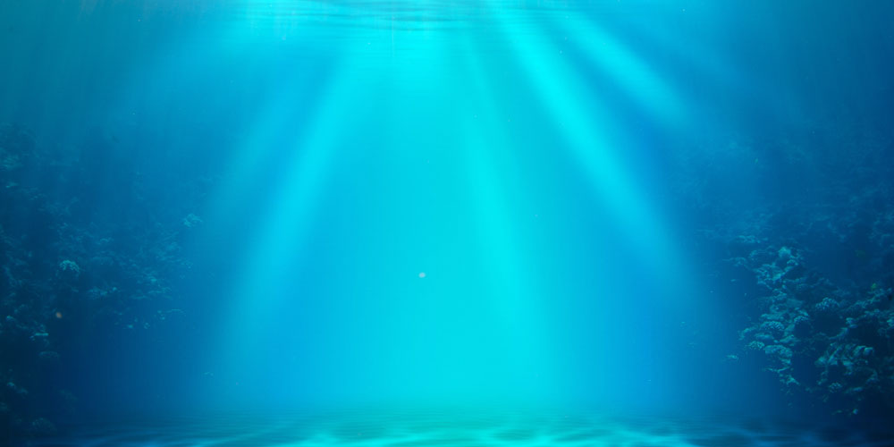

LayerSlider
3D
demo slider

The improve
is
to change.
To be perfect
is
to change often.
- Winston Churchill

200+ 2D & 3D transitions with Transition Builder!
Use with any HTML content including embedded videos!
Responsive with Smart Resize & Touch-enabled!
Multisite, Multi-language & Localization ready!